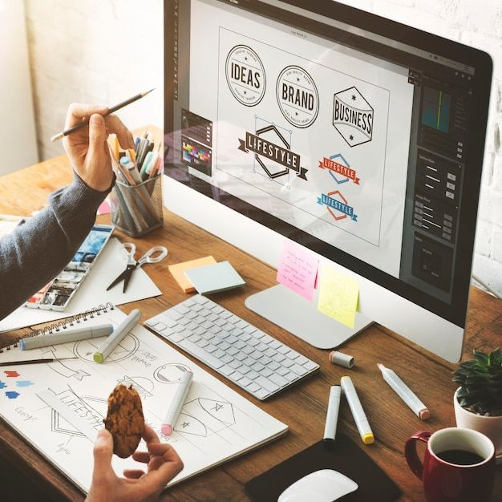
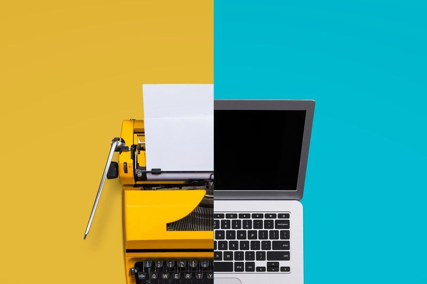

Mes passions

Le Design d'Application Mobile
Cette passion a commencé depuis que j'ai eu à utiliser un iphone, parce que la présentation était vraiment bien faite et elle me plaisait assez. Et c'est pour ça que j'ai décidé d'apprendre à faire ce même type de design sans pour autant plagier le travail d'Apple.
Le Graphisme
Cette passion provient d'une leçon bien administrée, et de plusieurs recherches que j'ai fait. Le fait d'être celui qui crée une identité pour une entreprise ou une entité quelconque est vraiment un coup de coeur.


L' Evolution Technologique
Cela s'explique par le fait que depuis tout petit, j'étais attiré par tout ce qui avait trait à l'éléctronique. Entre les téléphones portables et les consoles de jeux vidéos, j'avais vraiment l'embarras du choix pour me détendre.
Le Trading
Lorsque j'ai appris qu'il était possible de faire de l'argent à n'importe quel moment, à n'importe quel endroit grâce à son téléphone et une bonne connection Internet, je me suis vite précipité pour voir ce que ça donnerais en vrai.